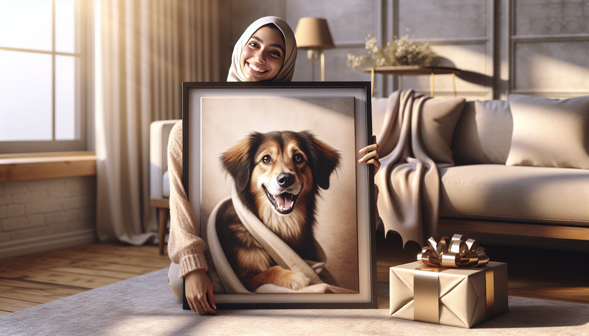

If you have ever shopped for a devoted pet parent, you know one thing is always true: generic gifts rarely feel special enough. Pet owners adore presents that celebrate the animals they love most, whether that is a playful dog, a loyal senior pup, or a beloved companion remembered forever. That is exactly why custom pet portraits have become such a meaningful gift idea. They are personal, emotional, stylish, and instantly memorable.
For dog lovers and pet owners, pets are family. Their quirks, expressions, routines, and cuddly personalities become part of everyday life. A custom portrait captures that bond in a way few other gifts can. Instead of giving something practical that may be forgotten in a few months, you are giving a keepsake that feels thoughtful from the very first glance.
Whether you are shopping for a birthday, holiday, housewarming, anniversary, or memorial gift, personalized pet artwork checks all the right boxes. It is heartfelt, unique, and made just for the recipient. In this post, we will explore why custom pet portraits make perfect gifts and why they continue to be a favorite among pet lovers everywhere.
The best gifts feel like they were chosen with real care, and custom pet portraits do exactly that. Unlike mass-produced home decor or standard gift sets, a personalized portrait is created specifically for one person and one pet. That level of customization instantly makes it more meaningful.
Every pet has a distinct personality. Some dogs are goofy and energetic, while others are calm, regal, or sweetly shy. A custom portrait can reflect those traits through pose, expression, background style, and artistic presentation. That means the final gift is not just attractive wall art. It is a visual celebration of a pet's individuality.
Gift shoppers often worry about finding something the recipient does not already have. With a custom pet portrait, that concern disappears. No two portraits are exactly alike, which makes each piece feel exclusive and unforgettable. It tells the recipient, “I know how much your pet means to you, and I wanted to honor that in a special way.”
One of the biggest reasons custom pet portraits are such perfect gifts is that they recognize the emotional bond people share with their pets. For many owners, a dog is not “just a dog.” Pets are companions through daily routines, life changes, milestones, and difficult moments. They offer comfort, joy, and unconditional love.
A portrait turns that relationship into something tangible. It gives pet lovers a beautiful way to display the connection they feel in their hearts every day. Every time they pass the artwork in their home, they are reminded of happy walks, tail wags, couch snuggles, and all the little moments that make pet ownership so rewarding.
That emotional connection is what transforms a custom pet portrait from a nice gift into a treasured keepsake. It is especially meaningful for people who proudly consider their pets part of the family and love decorating their homes with pieces that reflect what matters most to them.
Some gifts only make sense for specific holidays or life events, but custom pet portraits are wonderfully versatile. They fit a wide range of occasions, which makes them a smart and thoughtful choice for gift shoppers all year long.
Because they are so adaptable, custom pet portraits solve a common gifting problem: finding something meaningful that suits the moment. They can be playful and lighthearted or sentimental and comforting, depending on the occasion and the recipient's style.
Another reason custom pet portraits make such excellent gifts is that they are both sentimental and stylish. Many personalized gifts are appreciated but end up tucked away in a drawer or placed on a shelf where they are rarely noticed. A well-designed pet portrait, on the other hand, becomes part of the home's decor.
Pet-themed wall art adds warmth, personality, and charm to living spaces. It can brighten an entryway, add character to a home office, or become a conversation piece in the living room. For pet owners, displaying a portrait of their furry companion feels natural because it reflects a huge part of their life and identity.
Today’s custom pet portraits also come in a wide variety of styles, from classic and elegant to modern and playful. That flexibility makes it easy to find a design that matches the recipient's taste and home aesthetic. Whether they love minimalist decor, bold colors, rustic charm, or whimsical art, there is a pet portrait style that will feel perfectly at home in their space.
Great gifts do more than create a moment of excitement when they are opened. They continue to bring joy over time. Custom pet portraits are especially powerful in this way because they preserve a memory and turn it into something lasting.
Pets grow older far too quickly, and every stage of their life carries special meaning. A portrait can capture a puppy's playful spark, an adult dog's confident personality, or the gentle expression of a cherished senior companion. Long after trends change and other gifts are forgotten, personalized pet artwork remains meaningful.
This is one reason pet portraits are so popular as memorial gifts as well. For someone grieving the loss of a beloved pet, a custom portrait can offer comfort, remembrance, and a beautiful way to keep that pet's presence close. It is a sensitive and heartfelt gift that acknowledges how deeply pets shape our lives.
Even when given for a joyful occasion, a portrait becomes part of the recipient's memory story. They remember who gave it, why it was given, and how it made them feel. That emotional longevity is what makes it such a standout gift.
Many people want to give thoughtful gifts but end up choosing safe options like candles, mugs, blankets, or gift cards. While those can certainly be useful, they often do not feel especially personal. A custom pet portrait immediately stands out because it shows effort, intention, and genuine understanding of the recipient.
It tells the pet owner that you noticed what matters most to them. You paid attention to the photos they share, the stories they tell, and the love they have for their animal companion. That level of thoughtfulness is hard to fake, and recipients can feel the difference.
Custom gifts also have a wonderful “wow” factor. When someone unwraps a portrait of their dog or beloved pet, the reaction is often instant and emotional. There is surprise, delight, and often happy tears. Those are the kinds of gifts people remember forever.
For gift shoppers who want to give something unique without guessing at sizes, trends, or personal preferences, personalized pet portraits offer a perfect balance. They are meaningful, beautiful, and universally appreciated by animal lovers.
While dog lovers are especially passionate about personalized pet gifts, custom portraits appeal to a wide range of animal enthusiasts. They are ideal for anyone who feels a strong connection to their pet and loves celebrating that relationship in creative ways.
For dog owners, a portrait can capture everything they adore about their pup, from floppy ears and soulful eyes to goofy grins and signature poses. It is a fun way to honor the pet who makes every day brighter. And because dogs are such expressive companions, portraits often feel full of life and personality.
That said, custom pet portraits are not limited to one type of animal. They are just as meaningful for cat lovers and owners of other cherished pets. The universal appeal lies in the emotion behind the gift: it honors love, companionship, and the joy pets bring into our homes.
That broad appeal makes custom pet portraits a reliable choice whenever you are shopping for someone whose pet is clearly a huge part of their world.
At the heart of it, the reason custom pet portraits make perfect gifts is simple: they are personal, emotional, and lasting. They celebrate the pets people adore, capture precious memories, and bring warmth into the home. They work for nearly any occasion, suit many decor styles, and offer a level of thoughtfulness that ordinary gifts simply cannot match.
For pet owners, dog lovers, and anyone who believes pets are family, a custom portrait is more than a decorative item. It is a tribute to companionship, personality, and unconditional love. That is what makes it such a meaningful choice for birthdays, holidays, memorials, and every special moment in between.
If you are searching for a gift that is heartfelt, memorable, and guaranteed to make a pet lover smile, a custom pet portrait is always a wonderful idea.
Shop personalized pet products at SnoutAndAbout on Etsy.